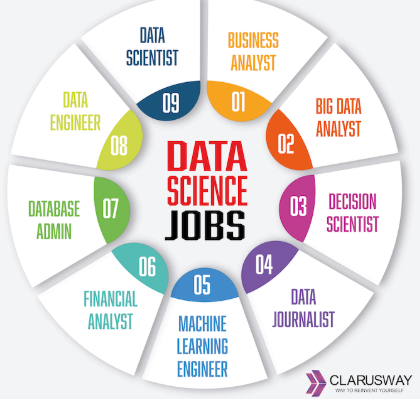

The field of data science is rapidly evolving, offering numerous career opportunities. Whether you're a beginner or looking to advance your career, these hacks will help you navigate the data science landscape effectively.
Automated machine learning (AutoML) is gaining traction, allowing non-experts to build machine learning models without extensive programming knowledge. This trend is democratizing data science.
Financial institutions are increasingly leveraging data science for risk assessment, fraud detection, and customer insights, showing the expansive applications of data science across industries.
Data science offers exciting career prospects, and by applying these hacks, you can enhance your skill set and stand out in a competitive job market. Embrace continuous learning and stay connected with the data science community to thrive in this field!